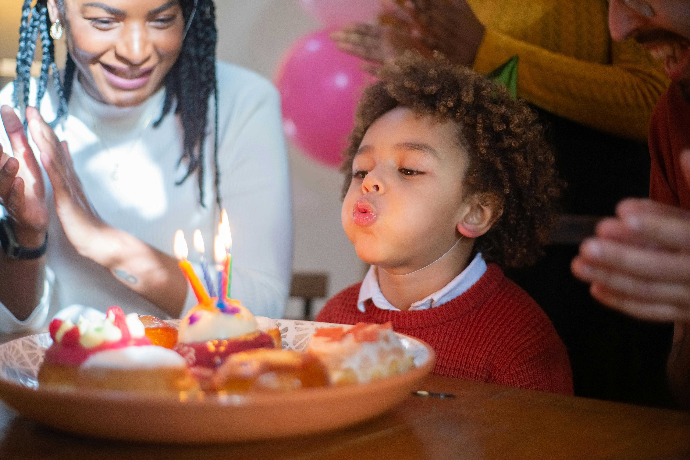
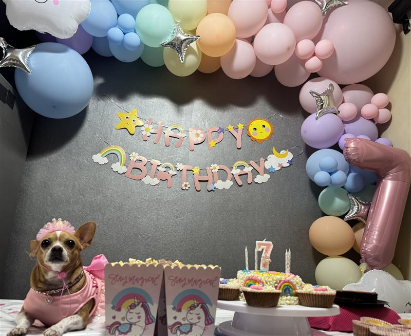

Me gusta mucho cocinar, me tranquiliza, me entretiene y disfruto hacerlo.Por otro lado los postres son mi parte favorita de la cocina, sobre todo cuando es un clima fresco me gusta más.
Te muestro mis postres favoritos para realizar.
- Cheesecake
- Pay de Limon o Fresa
- Brownie
- Roles de canela
Algunos de los ingredientes comunes que suelo utilizar son:
- Queso crema
- Leche condensada
- Leche evaporada
- Vainilla
Postres

Actividades que no me gusta realizar en la cocina
Lavar Trastes
No me gusta ensuciar variedad de utensilios o trastes, por que
son muchos los que se juntan y se deben de lavar.
Pasar tiempo con mi familia
Disfruto mucho el tiempo de calidad con mi familia y es algo demasiado importante para mi
por que desde pequeña fui apegada a ella.
Actividades favoritas con mi familia:
- Platicas interesantes
- Juesgos de mesa
- Fiestas festivas
- Cumpleaños
- Salidas juntos
Detalles que me disgustan de perder tiempo con mi familia:
- Horario y dias disponibles diferentes
- Responsabilidades estrictas
Cumpleaños

Momentos favoritos con mi familia
Mis cumpleaños
Yo amo mis cumpleaños por que mi familia siempre trata de hacerlo especial cada año,
la importancia y desempeño que hacen por que todo salga bien me gusta mucho.
Mi perrita se llama annie, pero de cariño le digo gorda o chaparra. Me gusta estar acariciandola en todo momento
salir al parque o a la tienda con ella.
Actividades favoritas con mi mascota:
- Salir al parque
- Jugar con sus peluches
- Dormir con ella
Detalles que me disgustan de perder tiempo con mi mascota:
- Salir muy noche al parque
- Que no obedezca
- Que quiera pelear con los demás perritos
Annie

Momentos favoritos con mi mascota
Festejar su cumpleaños
Me gusta festejar sus cumplaeños como si fuera una niña, a lo mejor mucha gente lo puede ver algo exagerado
pero es algo que en verdad disfruto y mucho.